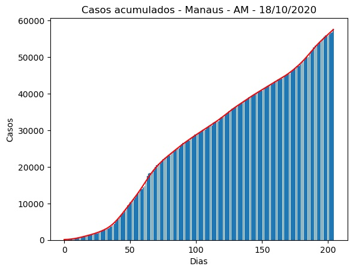
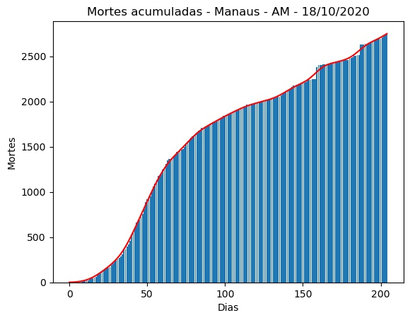
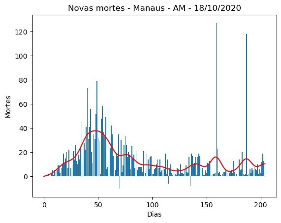
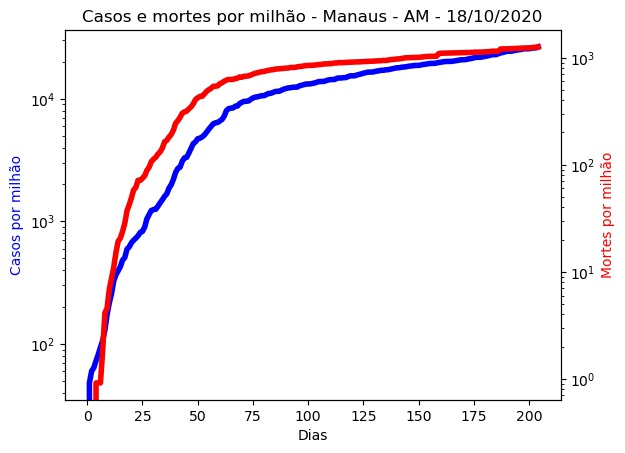
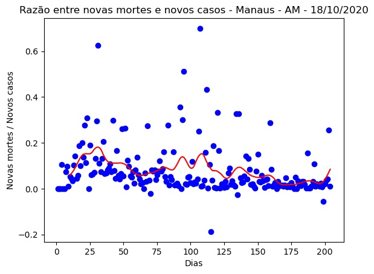
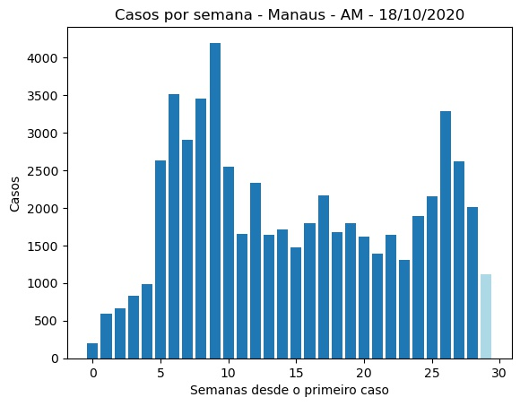
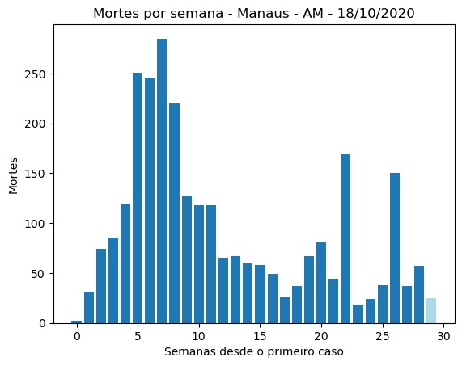
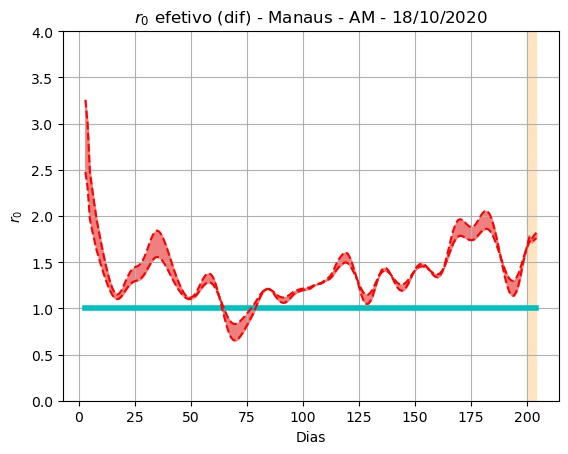
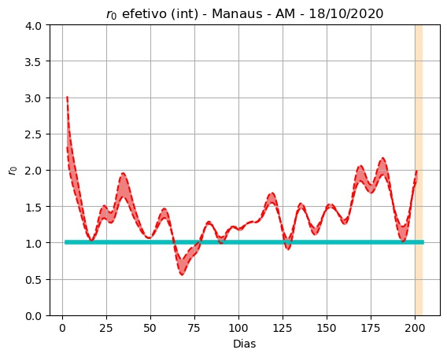
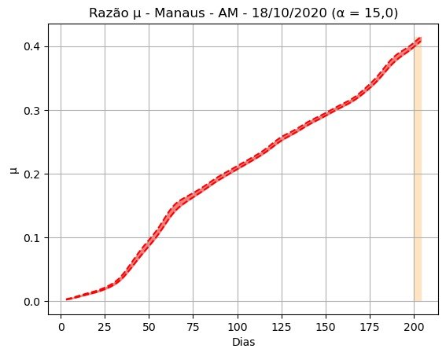

Manaus - AM - 18/10/2020.
Detalhes técnicos, aqui. Clique aqui para uma versão em PDF desta análise.
População: 2.182.763.
Início e fim da série: 2020-03-27 e 2020-10-17. (205 elementos - 29 semanas e 2 dias).
Número de casos totais e mortes: 57.787 e 2.750. (26.474 e 1.260 por milhão de habitantes, respectivamente.)
r0 (integral) efetivo médio (duas últimas semanas - três dias de atraso): 1,40 (std = 0,27).
Último intervalo para r0 (três dias de atraso): (1,87 : 1,99).
Limiar imunidade de grupo nR (baseado no valor de r0 (integral) efetivo médio) = 0,29.
Previsão do número total de casos para os próximos 5 dias: 58.062, 58.337, 58.612, 58.887, 59.162.
 


 
 
 
